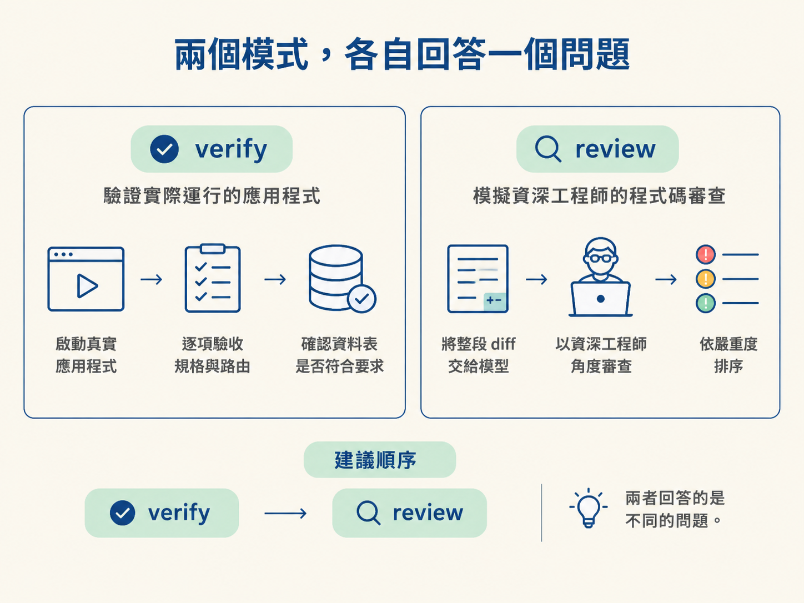
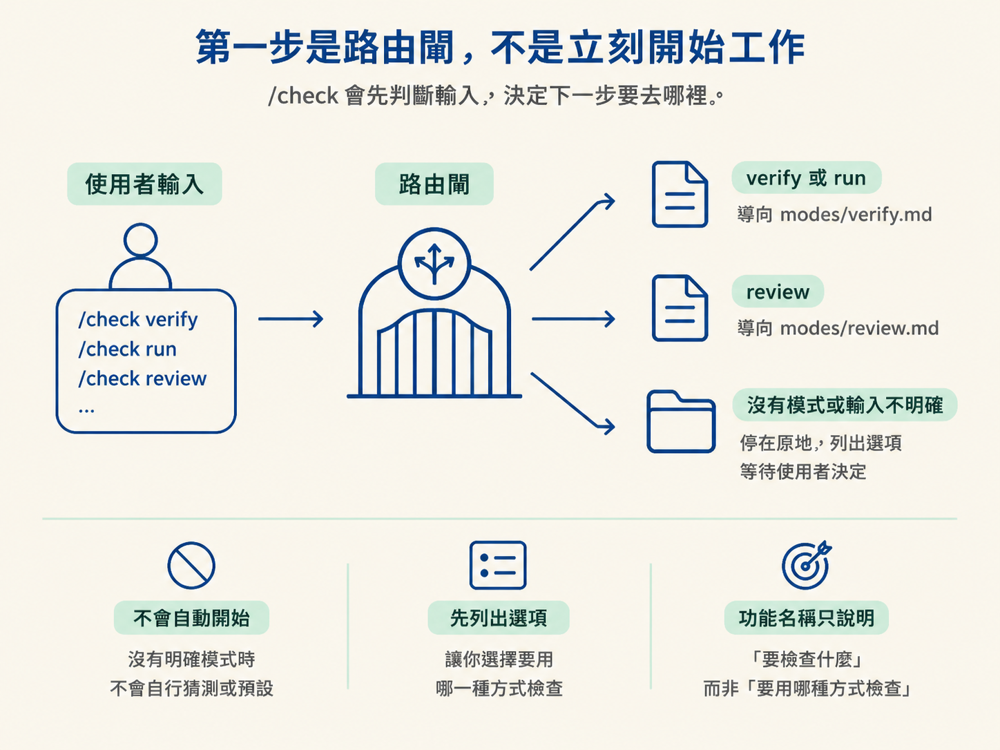
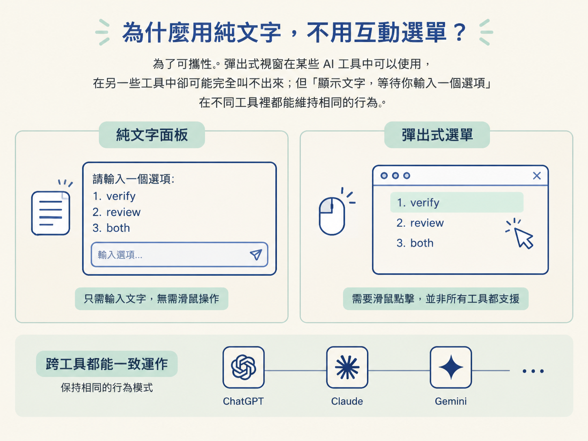

/check 入口：兩種模式，絕不替你猜讀完這一節，你應該能說明 /check 的兩種模式各自解決什麼問題、通常在工作流程的哪個位置執行，也能解釋為什麼沒有指定模式時，它會列出選項並停下來等你決定，而不是自動替你挑一個。
想像一下：你花了一個下午完成功能，也補上了測試。指令一跑，畫面上全是綠燈。就在按下「開 PR」之前，你心裡冒出一句：「這樣應該可以吧？」
這個念頭很常見，卻也是最容易放過問題的時刻。測試全綠，只代表你想到並測試的那些路徑目前符合預期。它不代表你漏想的路徑沒問題，也不代表那支忘了套用的 migration 已經生效。
就算功能真的能運作，還有另一個問題：這段程式碼能不能通過一位資深工程師的檢視？
/check 就是合併前的關卡，專門把這兩件事分開確認。它有兩個工作，因此只喊一聲 /check 時，第一個問題不是「開始檢查了嗎」，而是「你想做哪一種檢查？」
第一個模式是 verify，可以把它想成「實跑驗收」。它會啟動真正的應用程式，按照規格逐項操作，再用實際看到的結果確認改動是否符合要求。
它回答的是一個很具體的問題：每個驗收條件都真的滿足了嗎？規格承諾的畫面、路由和資料表，真的都建出來了嗎？這些事情，單靠綠色測試永遠不一定看得出來。
第二個模式是 review，可以把它想成「換一雙眼睛審查」。它會把這次的 diff 交給一個沒有寫過這段程式碼的模型，用資深工程師的角度讀過一遍，再按照嚴重度排序，將發現寫入 docs/reviews/。
這裡的關鍵是「不同模型」。如果讓同一個模型審查自己的輸出，它很可能也會帶著原本的盲點；就算多看幾遍，也未必看得到一開始就沒想到的問題。
兩個模式在流程中的位置也不同。verify 通常接在 /develop 之後，因為要先有可以執行的內容；review 通常放在開 PR 之前，因為它審查的是即將合併的整段 diff。
兩者通常會一起使用，順序是先 verify，再 review。

初學者很容易把 /check 想成「發現問題並順手修好」。其實正好相反：/check 只負責判斷，不負責修改。
verify 發現行為不符合預期時，會把問題指向 /debug 或 /develop。review 則會把發現整理成清單，交給寫程式的人處理。它自己不碰程式碼。
把「驗證」和「修正」分開，是為了讓結果可信。如果同一個工具既能判斷、又能修改，你就很難分辨它是在證明程式碼真的通過，還是先偷偷改到看起來能過。
/check 刻意把自己的手綁起來。它產出的內容只能是觀察與判斷，不是動手修改。看到問題後，下一步應該是帶著這個問題回到對應階段修正，而不是期待 /check 自己補洞。
回到最初的問題：如果只輸入 /check，它要怎麼辦？
這個 skill 的第一步很特別。它還不會讀取任何模式檔，也不會先碰你的 repo，而是先查看斜線後面是否指定了模式。這就像車站入口的驗票閘：先確認你要前往哪個月台，再讓你上車。
規則有三條。
第一，如果輸入的是 verify，或它的別名 run，就讀取 modes/verify.md，並按照其中流程執行。
第二，如果輸入的是 review，就讀取 modes/review.md。你在後面補上的指示，也會原封不動傳進去，例如 /check review with opus 或 /check review uncommitted。
第三，也是最重要的一條：如果沒有模式，或輸入內容不夠明確，/check不會猜，也不會預設。
因此，單獨輸入 /check 會停下來；只寫功能名稱，例如 /check auth，也會停下來。它會先列出模式選項，等你決定。功能名稱只說明「要檢查什麼」，並沒有說明「要用哪一種方式檢查」。

你可能會想，隨便挑一個模式執行，不就知道結果了嗎？問題在於，選錯模式通常不會當機。
它仍然會產出一份看起來很正式的結果，只是回答了另一個問題。你以為自己在確認功能是否符合規格，它其實正在審查程式碼；你以為自己在檢查 diff 的品質，它其實正在啟動應用程式。這類錯誤不會跳出明顯警告，反而會安靜地誤導你。
這也是為什麼 /check 不把兩個模式混在同一次執行裡。如果你選擇「兩個都要」，它會先執行 verify，完成後再把 review 作為下一步提供給你。
順序不能顛倒。review 要審查的是「已經確認能運作的程式碼」；先驗證、再審查，審查結果才有正確的前提。
這背後反映的是整套工作流程的基本態度：模型可以提出建議，但決定權在你手上。要選哪個模式、要不要執行，都是你的判斷。與其自作主張替你挑一個，再讓你根據錯誤結果做決定，不如多問一句，先確定大家正在處理同一個問題。
/check 所謂的「停下來問」，是印出一段純文字面板，而不是彈出只能用滑鼠操作的視窗。
面板會列出三個選項：
verify：執行真實應用程式，確認改動是否符合規格。review：讓新的模型從資深工程師角度審查 diff。both：先執行 verify，再執行 review。你只要輸入其中一個選項，它才會繼續往下走。
這樣設計是為了可攜性。彈出式視窗在某些 AI 工具中可以使用，在另一些工具中卻可能完全叫不出來；但「顯示文字，等待你輸入一個選項」在不同工具裡都能維持相同的行為。

它的 frontmatter 裡雖然也寫著 verify | review 這類提示，那是提供給 Claude Code 自動補齊用的，其他工具會直接忽略。真正可靠、也最容易跨工具運作的方式，就是這段純文字面板。
/check是合併前的關卡，分成兩個模式：verify會啟動真實應用程式，按照規格驗收；review會讓一個沒有寫過這段程式碼的模型，從資深工程師角度審查 diff，並產出依嚴重度排序的發現。兩個模式都不改碼。它們只會把問題指向
/debug、/develop，或整理成審查清單。/check的第一步是路由閘：收到verify就走驗證，收到review就走審查；沒有指定模式時，就列出選項並停下來等待。因為跑錯模式通常不會報錯，只會讓你站在錯的問題上做決定。
入口規則清楚後，下一節就能真正走進 verify。我們會看它如何把規格拆成一條條可以親眼確認的行為，以及執行完成後，如何產出不能靠想像捏造的判斷。